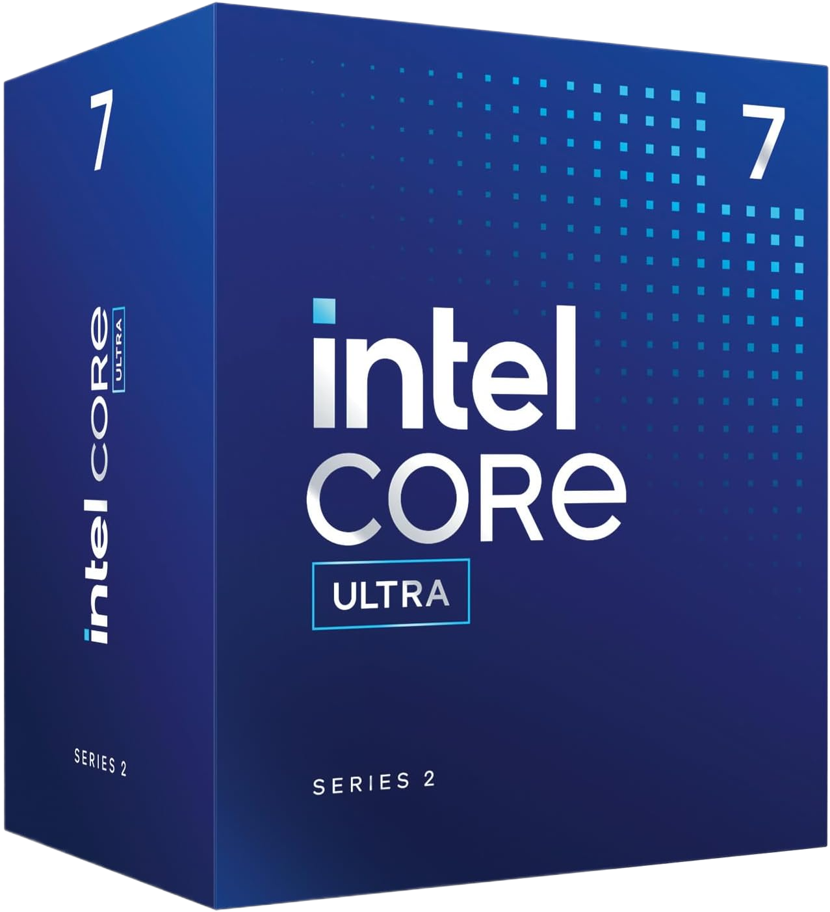
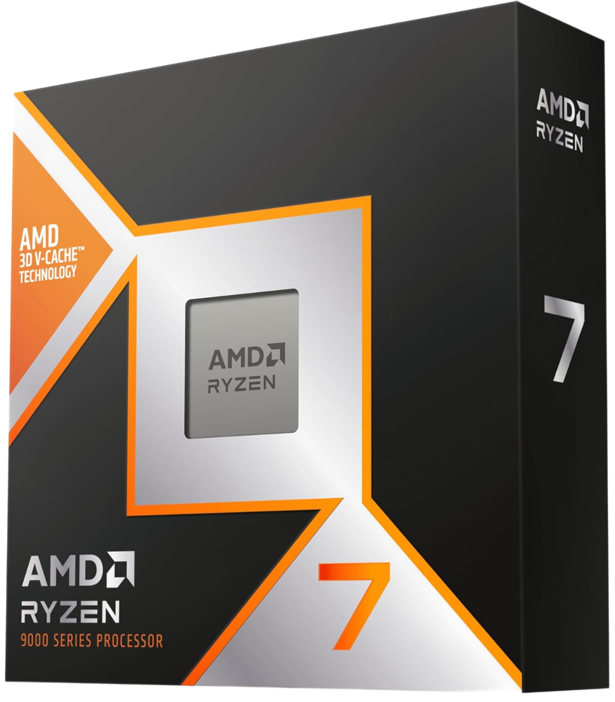
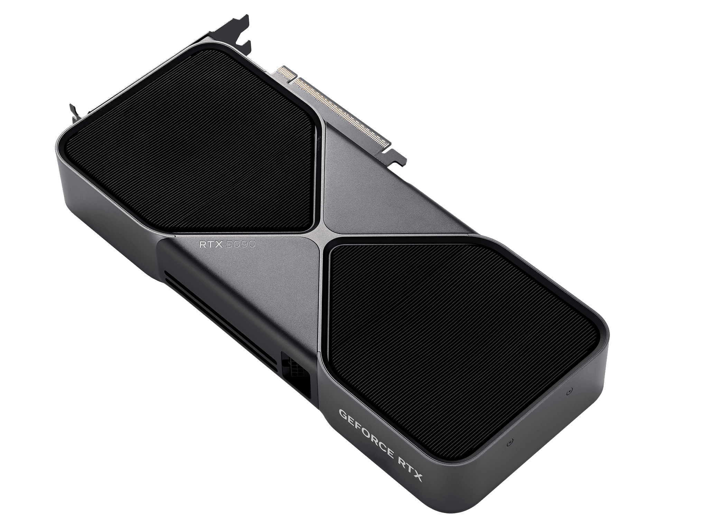
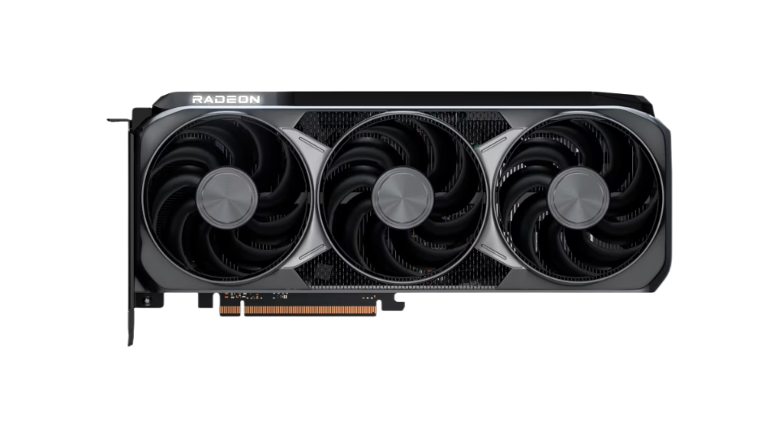
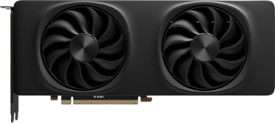

Le choix du processeur et de la carte graphique est essentiel pour obtenir un PC performant et adapté à vos besoins. Le CPU agit comme le cerveau de votre ordinateur : il gère les calculs, la réactivité et la fluidité générale. Le GPU, quant à lui, est responsable de l’affichage, du rendu 3D, des jeux vidéo et du montage vidéo.
Pour sélectionner un processeur adapté, plusieurs critères doivent être pris en compte :
Le GPU est le composant le plus important pour le jeu et la création visuelle. Voici les critères essentiels :
Un PC performant repose sur un équilibre entre CPU et GPU. Un processeur trop faible peut brider une carte graphique puissante (bottleneck), tandis qu’un GPU trop limité empêchera d’exploiter pleinement un excellent processeur.
Intel est l’un des leaders historiques du marché. Ses processeurs sont réputés pour leurs excellentes performances par cœur, ce qui les rend très efficaces en gaming.

AMD a révolutionné le marché avec ses processeurs Ryzen, offrant un excellent rapport performance/prix et de très bonnes performances en multitâche.

NVIDIA domine le marché des cartes graphiques grâce à ses technologies avancées comme le Ray Tracing et le DLSS, qui améliorent nettement les performances en jeu.

Les cartes graphiques Radeon offrent d’excellentes performances en rasterisation (performances brutes sans effets avancés) et un très bon rapport qualité/prix.

Intel est un nouvel acteur dans le domaine des cartes graphiques. Les modèles Arc offrent un bon rapport qualité/prix, surtout pour les créateurs de contenu.
